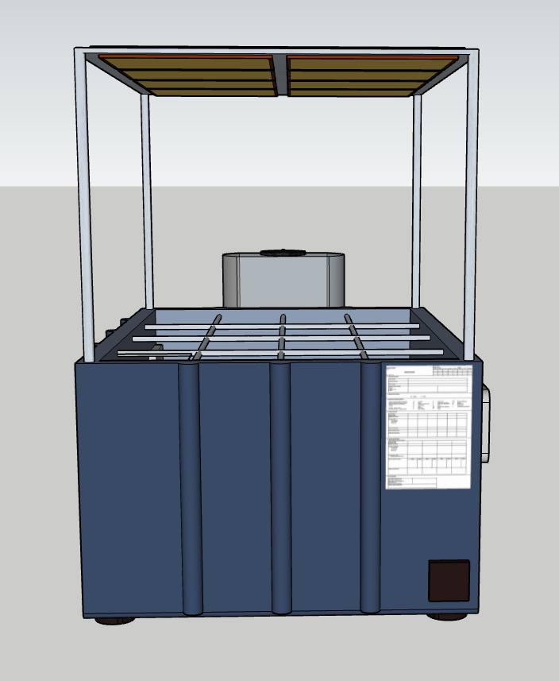
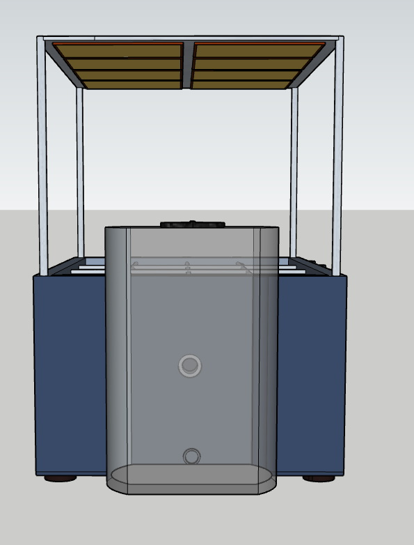
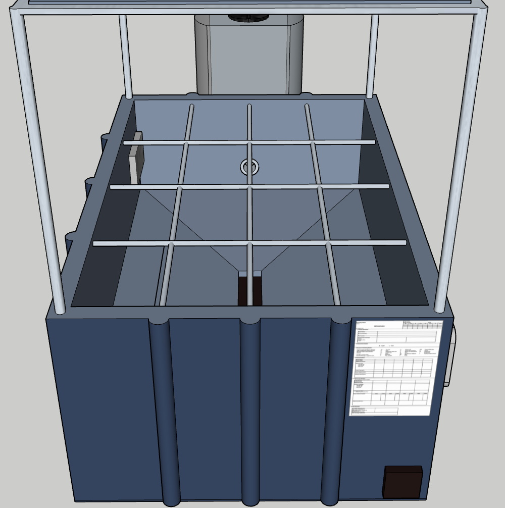

Što je HiPo sustav?
HiPo je projektiran kao pametni samoodrživi sustav za hidroponski uzgoj biljaka, poput rajčica, cikle, krastavca i zelene salate, te se temlji na inovativnim sklopovskim komponentama i upravljanju pomoću učenja. Sustav koristi tehnologiju hidroponike za uzgoj biljaka bez zemlje, koristeći vodu obogaćenu hranjivim tvarima.Kako radi?
Sustav radi tako da na temelju snimljenih podataka, poput kiselosti vode (pH), potrošnje i razine vode, temperature i razine svjetla, sustav automatski prilagođava uvjete u kojima rastu biljke, tako da podaci prolaze kroz lokalno integrirani model umjetne inteligencije, koji uči na prethodnim pogreškama i industrijskim standardima.Tko su korisnici?
Najčešći korisnici HiPo sustava su u dobi od 25 do 55, koji su zainteresirani i žele se baviti praktičnijim, zdravljim te ekološki prihvatljivijim načinom uzgoja hrane.Upute za korištenje


